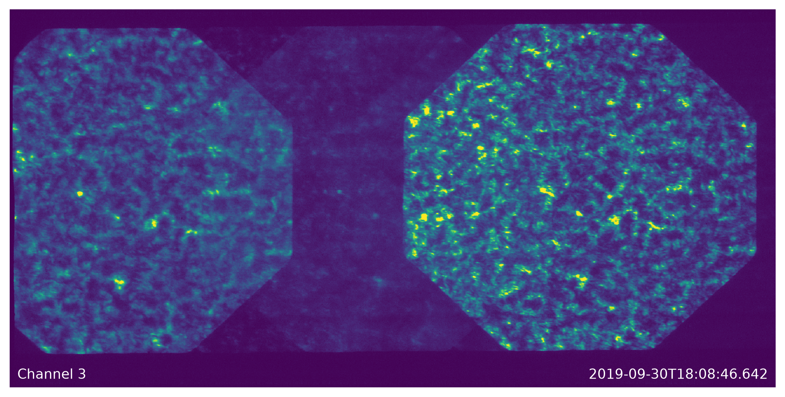

<!DOCTYPE html>


<html lang="en" data-content_root="./" >

  <head>
    <meta charset="utf-8" />
    <meta name="viewport" content="width=device-width, initial-scale=1.0" /><meta name="viewport" content="width=device-width, initial-scale=1" />
    <link href="_static/favicon_io/favicon-16x16.png" sizes="16x16" rel="icon" type="image/png">
    <link href="_static/favicon_io/favicon-32x32.png" sizes="32x32" rel="icon" type="image/png">
    <link rel="apple-touch-icon" href="_static/favicon_io/apple-touch-icon.png" sizes="180x180" type="image/png">
    <title>Introduction &#8212; ESIS  documentation</title>
  
  
  
  <script data-cfasync="false">
    document.documentElement.dataset.mode = localStorage.getItem("mode") || "";
    document.documentElement.dataset.theme = localStorage.getItem("theme") || "";
  </script>
  <!--
    this give us a css class that will be invisible only if js is disabled
  -->
  <noscript>
    <style>
      .pst-js-only { display: none !important; }

    </style>
  </noscript>
  
  <!-- Loaded before other Sphinx assets -->
  <link href="_static/styles/theme.css?digest=cb8930eaaf36d9849b67" rel="stylesheet" />
<link href="_static/styles/pydata-sphinx-theme.css?digest=cb8930eaaf36d9849b67" rel="stylesheet" />

    <link rel="stylesheet" type="text/css" href="_static/pygments.css?v=8f2a1f02" />
    <link rel="stylesheet" type="text/css" href="_static/graphviz.css?v=4ae1632d" />
    <link rel="stylesheet" type="text/css" href="_static/jupyter-sphinx.css" />
    <link rel="stylesheet" type="text/css" href="_static/thebelab.css" />
    <link rel="stylesheet" type="text/css" href="_static/sphinx-codeautolink.css?v=b2176991" />
  
  <!-- So that users can add custom icons -->
  <script defer src="_static/scripts/fontawesome.js?digest=cb8930eaaf36d9849b67"></script>
  <!-- Pre-loaded scripts that we'll load fully later -->
  <link rel="preload" as="script" href="_static/scripts/bootstrap.js?digest=cb8930eaaf36d9849b67" />
<link rel="preload" as="script" href="_static/scripts/pydata-sphinx-theme.js?digest=cb8930eaaf36d9849b67" />

    <script src="_static/documentation_options.js?v=5929fcd5"></script>
    <script src="_static/doctools.js?v=fd6eb6e6"></script>
    <script src="_static/sphinx_highlight.js?v=6ffebe34"></script>
    <script src="_static/thebelab-helper.js"></script>
    <script src="https://cdnjs.cloudflare.com/ajax/libs/require.js/2.3.4/require.min.js"></script>
    <script src="https://cdn.jsdelivr.net/npm/@jupyter-widgets/html-manager@^1.0.1/dist/embed-amd.js"></script>
    <script crossorigin="anonymous" integrity="sha256-Ae2Vz/4ePdIu6ZyI/5ZGsYnb+m0JlOmKPjt6XZ9JJkA=" src="https://cdnjs.cloudflare.com/ajax/libs/require.js/2.3.4/require.min.js"></script>
    <script>
                window.dataLayer = window.dataLayer || [];
                function gtag(){ dataLayer.push(arguments); }
                gtag('consent', 'default', {
                    'ad_storage': 'denied',
                    'ad_user_data': 'denied',
                    'ad_personalization': 'denied',
                    'analytics_storage': 'denied'
                });
            </script>
    <script async="async" src="https://www.googletagmanager.com/gtag/js?id=G-CQ9NDQQWKM"></script>
    <script>
                window.dataLayer = window.dataLayer || [];
                function gtag(){dataLayer.push(arguments);}
                gtag('js', new Date());
                gtag('config', 'G-CQ9NDQQWKM');
            </script>
    <script>DOCUMENTATION_OPTIONS.pagename = 'index';</script>
    <script>DOCUMENTATION_OPTIONS.search_as_you_type = false;</script>
    <link rel="index" title="Index" href="genindex.html" />
    <link rel="search" title="Search" href="search.html" />
    <link rel="next" title="Point-Spread Function" href="reports/point-spread-function.html" />
  <meta name="viewport" content="width=device-width, initial-scale=1"/>
  <meta name="docsearch:language" content="en"/>
  <meta name="docsearch:version" content="" />
  
    
    <script src="_static/searchtools.js"></script>
    <script src="_static/language_data.js"></script>
    <script src="searchindex.js"></script>
  
  </head>
  <body data-default-mode="">
  
  
  <div id="pst-skip-link" class="skip-link d-print-none"><a href="#main-content">Skip to main content</a></div>

  
  <div id="pst-scroll-pixel-helper"></div>
  
  <button type="button" class="btn rounded-pill" id="pst-back-to-top">
    <i class="fa-solid fa-arrow-up"></i>Back to top</button>
  
  
  
  
  <dialog id="pst-search-dialog">
    
<form class="bd-search d-flex align-items-center"
      action="search.html"
      method="get">
  <i class="fa-solid fa-magnifying-glass"></i>
  <input type="search"
         class="form-control"
         name="q"
         placeholder="Search the docs ..."
         aria-label="Search the docs ..."
         autocomplete="off"
         autocorrect="off"
         autocapitalize="off"
         spellcheck="false"/>
  <span class="search-button__kbd-shortcut"><kbd class="kbd-shortcut__modifier">Ctrl</kbd>+<kbd>K</kbd></span>
</form>
  </dialog>

  <div class="pst-async-banner-revealer d-none">
  <aside id="bd-header-version-warning" class="d-none d-print-none" aria-label="Version warning"></aside>
</div>

  
    <header id="pst-header" class="bd-header navbar navbar-expand-lg bd-navbar d-print-none">
<div class="bd-header__inner bd-page-width">
  <button class="pst-navbar-icon sidebar-toggle primary-toggle" aria-label="Site navigation">
    <span class="fa-solid fa-bars"></span>
  </button>
  
  
  <div class="col-lg-3 navbar-header-items__start">
    
      <div class="navbar-item">

  
    
  

<a class="navbar-brand logo" href="#">
  
  
  
  
  
    
    
      
    
    
    
    
  
  
</a></div>
    
  </div>
  
  <div class="col-lg-9 navbar-header-items">
    
    <div class="me-auto navbar-header-items__center">
      
        <div class="navbar-item">
<nav>
  <ul class="bd-navbar-elements navbar-nav">
    
<li class="nav-item ">
  <a class="nav-link nav-internal" href="reports/point-spread-function.html">
    Point-Spread Function
  </a>
</li>


<li class="nav-item ">
  <a class="nav-link nav-internal" href="reports/throughput.html">
    Throughput
  </a>
</li>


<li class="nav-item ">
  <a class="nav-link nav-internal" href="reports/aia-image-simulation.html">
    Image Simulation
  </a>
</li>


<li class="nav-item ">
  <a class="nav-link nav-internal" href="reports/level-0.html">
    Level-0 Dataset
  </a>
</li>


<li class="nav-item ">
  <a class="nav-link nav-internal" href="reports/level-1.html">
    Level-1 Dataset
  </a>
</li>

            <li class="nav-item dropdown">
                <button class="btn dropdown-toggle nav-item" type="button"
                data-bs-toggle="dropdown" aria-expanded="false"
                aria-controls="pst-nav-more-links">
                    More
                </button>
                <ul id="pst-nav-more-links" class="dropdown-menu">
                    
<li class=" ">
  <a class="nav-link dropdown-item nav-internal" href="reports/f2/design.html">
    Design & Specifications
  </a>
</li>


<li class=" ">
  <a class="nav-link dropdown-item nav-internal" href="reports/f2/grating.html">
    Grating Specifications
  </a>
</li>


<li class=" ">
  <a class="nav-link dropdown-item nav-internal" href="_autosummary/esis.html">
    esis
  </a>
</li>


<li class=" ">
  <a class="nav-link dropdown-item nav-internal" href="roadmap.html">
    Roadmap
  </a>
</li>


<li class=" ">
  <a class="nav-link dropdown-item nav-internal" href="schedule.html">
    Schedule
  </a>
</li>

                </ul>
            </li>
            
  </ul>
</nav></div>
      
    </div>
    
    
    <div class="navbar-header-items__end">
      
        <div class="navbar-item navbar-persistent--container">
          

<button class="btn search-button-field search-button__button pst-js-only" title="Search" aria-label="Search" data-bs-placement="bottom" data-bs-toggle="tooltip">
 <i class="fa-solid fa-magnifying-glass"></i>
 <span class="search-button__default-text">Search</span>
 <span class="search-button__kbd-shortcut"><kbd class="kbd-shortcut__modifier">Ctrl</kbd>+<kbd class="kbd-shortcut__modifier">K</kbd></span>
</button>
        </div>
      
      
        <div class="navbar-item">

<div class="theme-switch-container dropdown pst-js-only" data-bs-toggle="tooltip" data-bs-placement="bottom" title="Color mode">
  <button class="btn btn-sm nav-link pst-navbar-icon theme-switch-button dropdown-toggle" aria-label="Color mode" data-bs-toggle="dropdown">
    <i class="theme-switch fa-solid fa-sun fa-lg fa-fw" data-mode="light" title="Light"></i>
    <i class="theme-switch fa-solid fa-moon fa-lg fa-fw" data-mode="dark" title="Dark"></i>
    <i class="theme-switch fa-solid fa-circle-half-stroke fa-lg fa-fw" data-mode="auto" title="System Settings"></i>
  </button>
  <ul class="dropdown-menu dropdown-menu-end">
    <li><button class="dropdown-item d-flex align-items-center theme-change-button" data-mode="auto"><i class="fa-solid fa-circle-half-stroke fa-lg fa-fw me-1"></i>System Settings</button></li>
    <li><button class="dropdown-item d-flex align-items-center theme-change-button" data-mode="light"><i class="fa-solid fa-sun fa-lg fa-fw me-1"></i>Light</button></li>
    <li><button class="dropdown-item d-flex align-items-center theme-change-button" data-mode="dark"><i class="fa-solid fa-moon fa-lg fa-fw me-1"></i>Dark</button></li>
  </ul>
</div></div>
      
        <div class="navbar-item"><ul class="navbar-icon-links"
    aria-label="Icon Links">
        <li class="nav-item">
          
          
          
          
          
          
          
          
          <a href="https://github.com/esis-mission/esis" title="GitHub" class="nav-link pst-navbar-icon" rel="noopener" target="_blank" data-bs-toggle="tooltip" data-bs-placement="bottom"><i class="fa-brands fa-github fa-lg" aria-hidden="true"></i><span class="visually-hidden">GitHub</span></a>
        </li>
        <li class="nav-item">
          
          
          
          
          
          
          
          
          <a href="https://pypi.org/project/euv-snapshot-imaging-spectrograph/" title="PyPI" class="nav-link pst-navbar-icon" rel="noopener" target="_blank" data-bs-toggle="tooltip" data-bs-placement="bottom"><i class="fa-brands fa-python fa-lg" aria-hidden="true"></i><span class="visually-hidden">PyPI</span></a>
        </li>
</ul></div>
      
    </div>
    
  </div>
  
  
    <div class="navbar-persistent--mobile">

<button class="btn search-button-field search-button__button pst-js-only" title="Search" aria-label="Search" data-bs-placement="bottom" data-bs-toggle="tooltip">
 <i class="fa-solid fa-magnifying-glass"></i>
 <span class="search-button__default-text">Search</span>
 <span class="search-button__kbd-shortcut"><kbd class="kbd-shortcut__modifier">Ctrl</kbd>+<kbd class="kbd-shortcut__modifier">K</kbd></span>
</button>
    </div>
  

  
    <button class="pst-navbar-icon sidebar-toggle secondary-toggle" aria-label="On this page">
      <span class="fa-solid fa-outdent"></span>
    </button>
  
</div>

    </header>
  

  <div class="bd-container">
    <div class="bd-container__inner bd-page-width">
      
      
      
        
      
      <dialog id="pst-primary-sidebar-modal"></dialog>
      <div id="pst-primary-sidebar" class="bd-sidebar-primary bd-sidebar hide-on-wide">
        

  
  <div class="sidebar-header-items sidebar-primary__section">
    
    
      <div class="sidebar-header-items__center">
        
          
          
            <div class="navbar-item">
<nav>
  <ul class="bd-navbar-elements navbar-nav">
    
<li class="nav-item ">
  <a class="nav-link nav-internal" href="reports/point-spread-function.html">
    Point-Spread Function
  </a>
</li>


<li class="nav-item ">
  <a class="nav-link nav-internal" href="reports/throughput.html">
    Throughput
  </a>
</li>


<li class="nav-item ">
  <a class="nav-link nav-internal" href="reports/aia-image-simulation.html">
    Image Simulation
  </a>
</li>


<li class="nav-item ">
  <a class="nav-link nav-internal" href="reports/level-0.html">
    Level-0 Dataset
  </a>
</li>


<li class="nav-item ">
  <a class="nav-link nav-internal" href="reports/level-1.html">
    Level-1 Dataset
  </a>
</li>


<li class="nav-item ">
  <a class="nav-link nav-internal" href="reports/f2/design.html">
    Design & Specifications
  </a>
</li>


<li class="nav-item ">
  <a class="nav-link nav-internal" href="reports/f2/grating.html">
    Grating Specifications
  </a>
</li>


<li class="nav-item ">
  <a class="nav-link nav-internal" href="_autosummary/esis.html">
    esis
  </a>
</li>


<li class="nav-item ">
  <a class="nav-link nav-internal" href="roadmap.html">
    Roadmap
  </a>
</li>


<li class="nav-item ">
  <a class="nav-link nav-internal" href="schedule.html">
    Schedule
  </a>
</li>

  </ul>
</nav></div>
          
        
      </div>
    
    
    
      <div class="sidebar-header-items__end">
        
          <div class="navbar-item">

<div class="theme-switch-container dropdown pst-js-only" data-bs-toggle="tooltip" data-bs-placement="bottom" title="Color mode">
  <button class="btn btn-sm nav-link pst-navbar-icon theme-switch-button dropdown-toggle" aria-label="Color mode" data-bs-toggle="dropdown">
    <i class="theme-switch fa-solid fa-sun fa-lg fa-fw" data-mode="light" title="Light"></i>
    <i class="theme-switch fa-solid fa-moon fa-lg fa-fw" data-mode="dark" title="Dark"></i>
    <i class="theme-switch fa-solid fa-circle-half-stroke fa-lg fa-fw" data-mode="auto" title="System Settings"></i>
  </button>
  <ul class="dropdown-menu dropdown-menu-end">
    <li><button class="dropdown-item d-flex align-items-center theme-change-button" data-mode="auto"><i class="fa-solid fa-circle-half-stroke fa-lg fa-fw me-1"></i>System Settings</button></li>
    <li><button class="dropdown-item d-flex align-items-center theme-change-button" data-mode="light"><i class="fa-solid fa-sun fa-lg fa-fw me-1"></i>Light</button></li>
    <li><button class="dropdown-item d-flex align-items-center theme-change-button" data-mode="dark"><i class="fa-solid fa-moon fa-lg fa-fw me-1"></i>Dark</button></li>
  </ul>
</div></div>
        
          <div class="navbar-item"><ul class="navbar-icon-links"
    aria-label="Icon Links">
        <li class="nav-item">
          
          
          
          
          
          
          
          
          <a href="https://github.com/esis-mission/esis" title="GitHub" class="nav-link pst-navbar-icon" rel="noopener" target="_blank" data-bs-toggle="tooltip" data-bs-placement="bottom"><i class="fa-brands fa-github fa-lg" aria-hidden="true"></i><span class="visually-hidden">GitHub</span></a>
        </li>
        <li class="nav-item">
          
          
          
          
          
          
          
          
          <a href="https://pypi.org/project/euv-snapshot-imaging-spectrograph/" title="PyPI" class="nav-link pst-navbar-icon" rel="noopener" target="_blank" data-bs-toggle="tooltip" data-bs-placement="bottom"><i class="fa-brands fa-python fa-lg" aria-hidden="true"></i><span class="visually-hidden">PyPI</span></a>
        </li>
</ul></div>
        
      </div>
    
  </div>
  
  
  <div class="sidebar-primary-items__end sidebar-primary__section">
      <div class="sidebar-primary-item">
<div id="ethical-ad-placement"
      class="flat"
      data-ea-publisher="readthedocs"
      data-ea-type="readthedocs-sidebar"
      data-ea-manual="true">
</div></div>
  </div>


      </div>
      
      <main id="main-content" class="bd-main" role="main">
        
        
          <div class="bd-content">
            <div class="bd-article-container">
              
              <div class="bd-header-article d-print-none"></div>
              
              
              
                
<div id="searchbox"></div>
                <article class="bd-article">
                  
  <section id="introduction">
<h1>Introduction<a class="headerlink" href="#introduction" title="Link to this heading">#</a></h1>
<p>The EUV Snapshot Imaging Spectrograph (ESIS) is a NASA
<a class="reference external" href="https://en.wikipedia.org/wiki/Sounding_rocket">sounding rocket</a> mission
designed to measure the speed of plasma in the
<a class="reference external" href="https://en.wikipedia.org/wiki/Sun#Atmosphere">solar atmosphere</a>.
ESIS was launched from
<a class="reference external" href="https://en.wikipedia.org/wiki/White_Sands_Missile_Range">White Sands Missile Range</a>
on September 30th, 2019, and is planned to launch again in 2027.</p>
<figure class="align-default" id="id16">

<figcaption>
<p><span class="caption-text">The ESIS instrument on the rail preparing for launch. Image credit: NSROC
and Catharine Bunn.</span><a class="headerlink" href="#id16" title="Link to this image">#</a></p>
</figcaption>
</figure>
<p>ESIS is a
<a class="reference external" href="https://en.wikipedia.org/wiki/Computed_tomography_imaging_spectrometer">computed tomography imaging spectrometer (CTIS)</a>:
four cameras look at the Sun through gratings mounted at different azimuths,
so every camera records a dispersed image of the whole field of view in a
single exposure.
Inverting the four overlapping projections recovers a spatial-spectral cube,
which measures the
<a class="reference external" href="https://en.wikipedia.org/wiki/Doppler_effect">Doppler shift</a> of the
<a class="reference external" href="https://en.wikipedia.org/wiki/Spectral_line">spectral lines</a> in the ESIS
passband without ever scanning a slit across the target.</p>
<p>Below is an example of one image captured during the 2019 flight.</p>
<div class="jupyter_cell docutils container">
<div class="cell_output docutils container">

</div>
</div>
<div class="line-block">
<div class="line"><br /></div>
</div>
<p>This library provides a model of the ESIS optical system as well as utilities
to interpret the images in terms of physically-meaningful quantities.</p>
<div class="line-block">
<div class="line"><br /></div>
</div>
</section>
<section id="installation">
<h1>Installation<a class="headerlink" href="#installation" title="Link to this heading">#</a></h1>
<p>ESIS is published on PyPI and can be installed using pip:</p>
<div class="highlight-bash notranslate"><div class="highlight"><pre><span></span>pip<span class="w"> </span>install<span class="w"> </span>euv-snapshot-imaging-spectrograph
</pre></div>
</div>
<p>To work on the package itself, install it from source:</p>
<div class="highlight-bash notranslate"><div class="highlight"><pre><span></span>git<span class="w"> </span>clone<span class="w"> </span>https://github.com/esis-mission/esis
<span class="nb">cd</span><span class="w"> </span>esis
pip<span class="w"> </span>install<span class="w"> </span>-e<span class="w"> </span>.<span class="o">[</span>test<span class="o">]</span>
</pre></div>
</div>
<p>The Level-0 flight images are too large to ship with the package, so
<a class="reference internal" href="_autosummary/esis.flights.f1.data.path_directory.html#esis.flights.f1.data.path_directory" title="esis.flights.f1.data.path_directory"><code class="xref py py-func docutils literal notranslate"><span class="pre">esis.flights.f1.data.path_directory()</span></code></a> downloads them the first time they
are needed and unpacks them into <code class="docutils literal notranslate"><span class="pre">~/.esis/data</span></code> (override with the
<code class="docutils literal notranslate"><span class="pre">ESIS_DATA_DIR</span></code> environment variable).
Derived products are memoized by <code class="docutils literal notranslate"><span class="pre">esis.memory</span></code> under <code class="docutils literal notranslate"><span class="pre">~/.esis/cache</span></code>.</p>
<div class="line-block">
<div class="line"><br /></div>
</div>
</section>
<section id="features">
<h1>Features<a class="headerlink" href="#features" title="Link to this heading">#</a></h1>
<ul class="simple">
<li><p>A parametric model of the ESIS optical system
(<a class="reference internal" href="_autosummary/esis.optics.FrontAperture.html#esis.optics.FrontAperture" title="esis.optics.FrontAperture"><code class="xref py py-class docutils literal notranslate"><span class="pre">esis.optics.FrontAperture</span></code></a>, <a class="reference internal" href="_autosummary/esis.optics.CentralObscuration.html#esis.optics.CentralObscuration" title="esis.optics.CentralObscuration"><code class="xref py py-class docutils literal notranslate"><span class="pre">esis.optics.CentralObscuration</span></code></a>,
<a class="reference internal" href="_autosummary/esis.optics.PrimaryMirror.html#esis.optics.PrimaryMirror" title="esis.optics.PrimaryMirror"><code class="xref py py-class docutils literal notranslate"><span class="pre">esis.optics.PrimaryMirror</span></code></a>, <a class="reference internal" href="_autosummary/esis.optics.FieldStop.html#esis.optics.FieldStop" title="esis.optics.FieldStop"><code class="xref py py-class docutils literal notranslate"><span class="pre">esis.optics.FieldStop</span></code></a>,
<a class="reference internal" href="_autosummary/esis.optics.Grating.html#esis.optics.Grating" title="esis.optics.Grating"><code class="xref py py-class docutils literal notranslate"><span class="pre">esis.optics.Grating</span></code></a>, <a class="reference internal" href="_autosummary/esis.optics.Filter.html#esis.optics.Filter" title="esis.optics.Filter"><code class="xref py py-class docutils literal notranslate"><span class="pre">esis.optics.Filter</span></code></a>, and
<a class="reference internal" href="_autosummary/esis.optics.Camera.html#esis.optics.Camera" title="esis.optics.Camera"><code class="xref py py-class docutils literal notranslate"><span class="pre">esis.optics.Camera</span></code></a>), assembled into an
<a class="reference internal" href="_autosummary/esis.optics.Instrument.html#esis.optics.Instrument" title="esis.optics.Instrument"><code class="xref py py-class docutils literal notranslate"><span class="pre">esis.optics.Instrument</span></code></a> and built on <a class="reference external" href="https://optika.readthedocs.io/en/stable/index.html" title="(in optika)"><span class="xref std std-doc">optika</span></a>.</p></li>
<li><p>Raytrace-based characterization of the instrument: point spread function,
effective area, throughput, vignetting, and distortion.</p></li>
<li><p>Both the final optical design (<a class="reference internal" href="_autosummary/esis.flights.f1.optics.design.html#esis.flights.f1.optics.design" title="esis.flights.f1.optics.design"><code class="xref py py-func docutils literal notranslate"><span class="pre">esis.flights.f1.optics.design()</span></code></a>) and an
as-built model of the instrument that actually flew
(<a class="reference internal" href="_autosummary/esis.flights.f1.optics.as_built.html#esis.flights.f1.optics.as_built" title="esis.flights.f1.optics.as_built"><code class="xref py py-func docutils literal notranslate"><span class="pre">esis.flights.f1.optics.as_built()</span></code></a>), along with the best-fit distortion
parameters recovered from the flight images
(<a class="reference internal" href="_autosummary/esis.flights.f1.optics.distortion_fit.html#esis.flights.f1.optics.distortion_fit" title="esis.flights.f1.optics.distortion_fit"><code class="xref py py-func docutils literal notranslate"><span class="pre">esis.flights.f1.optics.distortion_fit()</span></code></a>).</p></li>
<li><p>A data-reduction pipeline organized by processing level, from the raw FITS
files (<a class="reference internal" href="_autosummary/esis.data.Level_0.html#esis.data.Level_0" title="esis.data.Level_0"><code class="xref py py-class docutils literal notranslate"><span class="pre">esis.data.Level_0</span></code></a>) to calibrated maps of the photons incident
on each sensor (<a class="reference internal" href="_autosummary/esis.data.Level_1.html#esis.data.Level_1" title="esis.data.Level_1"><code class="xref py py-class docutils literal notranslate"><span class="pre">esis.data.Level_1</span></code></a>), with bias and dark subtraction
and cosmic-ray removal.</p></li>
<li><p>Synthetic solar scenes assembled from SDO/AIA
(<a class="reference internal" href="_autosummary/esis.data.synth.scene_aia.html#esis.data.synth.scene_aia" title="esis.data.synth.scene_aia"><code class="xref py py-func docutils literal notranslate"><span class="pre">esis.data.synth.scene_aia()</span></code></a>) and IRIS
(<a class="reference internal" href="_autosummary/esis.data.synth.scene_iris.html#esis.data.synth.scene_iris" title="esis.data.synth.scene_iris"><code class="xref py py-func docutils literal notranslate"><span class="pre">esis.data.synth.scene_iris()</span></code></a>) observations, for validating the forward
model against a known truth.</p></li>
<li><p>Flight-specific configurations for both the 2019 flight
(<a class="reference internal" href="_autosummary/esis.flights.f1.html#module-esis.flights.f1" title="esis.flights.f1"><code class="xref py py-mod docutils literal notranslate"><span class="pre">esis.flights.f1</span></code></a>) and the planned 2027 flight
(<a class="reference internal" href="_autosummary/esis.flights.f2.html#module-esis.flights.f2" title="esis.flights.f2"><code class="xref py py-mod docutils literal notranslate"><span class="pre">esis.flights.f2</span></code></a>), including the <a class="reference internal" href="_autosummary/esis.nsroc.html#module-esis.nsroc" title="esis.nsroc"><code class="xref py py-mod docutils literal notranslate"><span class="pre">esis.nsroc</span></code></a> timelines.</p></li>
<li><p>Every model and dataset is an n-dimensional
<a class="reference external" href="https://named-arrays.readthedocs.io/en/stable/index.html" title="(in named_arrays)"><span class="xref std std-doc">named-arrays</span></a> object, so wavelength, field, pupil,
channel, and time are addressed by name, and uncertainties propagate
automatically.</p></li>
</ul>
<div class="line-block">
<div class="line"><br /></div>
</div>
</section>
<section id="mission-requirements">
<h1>Mission Requirements<a class="headerlink" href="#mission-requirements" title="Link to this heading">#</a></h1>
<p>The performance required of the optical system for mission success, available
programmatically from <a class="reference internal" href="_autosummary/esis.flights.f1.optics.requirements.html#esis.flights.f1.optics.requirements" title="esis.flights.f1.optics.requirements"><code class="xref py py-func docutils literal notranslate"><span class="pre">esis.flights.f1.optics.requirements()</span></code></a>.</p>
<div class="pst-scrollable-table-container"><table class="table">
<colgroup>
<col style="width: 57.1%" />
<col style="width: 42.9%" />
</colgroup>
<thead>
<tr class="row-odd"><th class="head"><p>Quantity</p></th>
<th class="head"><p>Requirement</p></th>
</tr>
</thead>
<tbody>
<tr class="row-even"><td><p>Spatial resolution</p></td>
<td><p>1.5 Mm</p></td>
</tr>
<tr class="row-odd"><td><p>Spectral resolution</p></td>
<td><p>18 km/s</p></td>
</tr>
<tr class="row-even"><td><p>Field of view</p></td>
<td><p>10 arcmin</p></td>
</tr>
<tr class="row-odd"><td><p>Signal-to-noise ratio</p></td>
<td><p>17.3</p></td>
</tr>
<tr class="row-even"><td><p>Cadence</p></td>
<td><p>15 s</p></td>
</tr>
<tr class="row-odd"><td><p>Observation length</p></td>
<td><p>150 s</p></td>
</tr>
</tbody>
</table>
</div>
<div class="line-block">
<div class="line"><br /></div>
</div>
</section>
<section id="tutorials">
<h1>Tutorials<a class="headerlink" href="#tutorials" title="Link to this heading">#</a></h1>
<p>A series of notebooks which demonstrate the functionality of this package.</p>
<section id="flight-1-2019">
<h2>Flight 1 (2019)<a class="headerlink" href="#flight-1-2019" title="Link to this heading">#</a></h2>
<div class="toctree-wrapper compound">
<ul>
<li class="toctree-l1"><a class="reference internal" href="reports/point-spread-function.html">Point-Spread Function</a></li>
<li class="toctree-l1"><a class="reference internal" href="reports/throughput.html">Throughput</a></li>
<li class="toctree-l1"><a class="reference internal" href="reports/aia-image-simulation.html">Image Simulation</a></li>
<li class="toctree-l1"><a class="reference internal" href="reports/level-0.html">Level-0 Dataset</a></li>
<li class="toctree-l1"><a class="reference internal" href="reports/level-1.html">Level-1 Dataset</a><ul>
<li class="toctree-l2"><a class="reference internal" href="reports/level-1.html#Bias-Subtraction">Bias Subtraction</a></li>
<li class="toctree-l2"><a class="reference internal" href="reports/level-1.html#Cropping-Non-Active-Pixels">Cropping Non-Active Pixels</a></li>
<li class="toctree-l2"><a class="reference internal" href="reports/level-1.html#Conversion-to-Electrons">Conversion to Electrons</a></li>
<li class="toctree-l2"><a class="reference internal" href="reports/level-1.html#Dark-Subtraction">Dark Subtraction</a></li>
<li class="toctree-l2"><a class="reference internal" href="reports/level-1.html#Cosmic-Ray-Removal">Cosmic Ray Removal</a></li>
</ul>
</li>
</ul>
</div>
</section>
<section id="flight-2-planned-2027">
<h2>Flight 2 (Planned 2027)<a class="headerlink" href="#flight-2-planned-2027" title="Link to this heading">#</a></h2>
<div class="toctree-wrapper compound">
<ul>
<li class="toctree-l1"><a class="reference internal" href="reports/f2/design.html">Design &amp; Specifications</a><ul>
<li class="toctree-l2"><a class="reference internal" href="reports/f2/design.html#Spot-Diagram">Spot Diagram</a></li>
<li class="toctree-l2"><a class="reference internal" href="reports/f2/design.html#Primary">Primary</a></li>
</ul>
</li>
<li class="toctree-l1"><a class="reference internal" href="reports/f2/grating.html">Grating Specifications</a><ul>
<li class="toctree-l2"><a class="reference internal" href="reports/f2/grating.html#Coordinate-System">Coordinate System</a></li>
<li class="toctree-l2"><a class="reference internal" href="reports/f2/grating.html#Science-Grating-Ruling-Prescription">Science Grating Ruling Prescription</a></li>
<li class="toctree-l2"><a class="reference internal" href="reports/f2/grating.html#Visible-Alignment-Gratings">Visible Alignment Gratings</a></li>
<li class="toctree-l2"><a class="reference internal" href="reports/f2/grating.html#End-to-end-Check">End-to-end Check</a></li>
</ul>
</li>
</ul>
</div>
<div class="line-block">
<div class="line"><br /></div>
</div>
</section>
</section>
<section id="api-reference">
<h1>API Reference<a class="headerlink" href="#api-reference" title="Link to this heading">#</a></h1>
<p>An in-depth explanation of all the functions, classes, etc. that are implemented
as part of this library.</p>
<div class="pst-scrollable-table-container"><table class="autosummary longtable table">
<tbody>
<tr class="row-odd"><td><p><a class="reference internal" href="_autosummary/esis.html#module-esis" title="esis"><code class="xref py py-obj docutils literal notranslate"><span class="pre">esis</span></code></a></p></td>
<td><p>Model the ESIS optical system and invert images captured during flight.</p></td>
</tr>
</tbody>
</table>
</div>
<div class="line-block">
<div class="line"><br /></div>
</div>
</section>
<section id="publications">
<h1>Publications<a class="headerlink" href="#publications" title="Link to this heading">#</a></h1>
<p>The instrument and the results of the first flight are described in the mission
paper, <span class="bibtex-citation" id="id1">Parker <em>et al.</em> [<a class="reference internal" href="#id7" title="Jacob D. Parker, Roy T. Smart, Charles Kankelborg, Amy Winebarger, and Nelson Goldsworth. First Flight of the EUV Snapshot Imaging Spectrograph (ESIS). \apj , 938(2):116, October 2022. doi:10.3847/1538-4357/ac8eaa.">2022</a>]</span>
(<a class="reference external" href="https://iopscience.iop.org/article/10.3847/1538-4357/ac8eaa/meta">publisher</a>,
<a class="reference external" href="https://doi.org/10.3847/1538-4357/ac8eaa">doi:10.3847/1538-4357/ac8eaa</a>).
Please cite this paper if you use this package in your research.</p>
<p>The Level-0 flight data is archived separately and should be cited alongside
it:
<a class="reference external" href="https://doi.org/10.5281/zenodo.21997280">doi:10.5281/zenodo.21997280</a>
(also available as <code class="docutils literal notranslate"><span class="pre">esis.flights.f1.data.doi</span></code>).</p>
<div class="line-block">
<div class="line"><br /></div>
</div>
</section>
<section id="future-work">
<h1>Future Work<a class="headerlink" href="#future-work" title="Link to this heading">#</a></h1>
<div class="toctree-wrapper compound">
<ul>
<li class="toctree-l1"><a class="reference internal" href="roadmap.html">Roadmap</a></li>
<li class="toctree-l1"><a class="reference internal" href="schedule.html">Schedule</a></li>
</ul>
</div>
<div class="line-block">
<div class="line"><br /></div>
</div>
</section>
<section id="references">
<h1>References<a class="headerlink" href="#references" title="Link to this heading">#</a></h1>
<div class="docutils container" id="id2">
<div role="list" class="citation-list">
<div class="citation" id="id12" role="doc-biblioentry">
<span class="label"><span class="fn-bracket">[</span>1<span class="fn-bracket">]</span></span>
<p>G. A. Doschek and U. Feldman. Properties of the lower transition region: the widths of optically allowed and intersystem spectral lines. <em>The Astrophysical Journal</em>, 600(2):1061, jan 2004. URL: <a class="reference external" href="https://doi.org/10.1086/379877">https://doi.org/10.1086/379877</a>, <a class="reference external" href="https://doi.org/10.1086/379877">doi:10.1086/379877</a>.</p>
</div>
<div class="citation" id="id3" role="doc-biblioentry">
<span class="label"><span class="fn-bracket">[</span>2<span class="fn-bracket">]</span></span>
<p>Jeffrey B Kortright and David L Windt. Amorphous silicon carbide coatings for extreme ultraviolet optics. <em>Applied optics</em>, 27 14:2841–6, 1988. URL: <a class="reference external" href="https://api.semanticscholar.org/CorpusID:39248487">https://api.semanticscholar.org/CorpusID:39248487</a>.</p>
</div>
<div class="citation" id="id8" role="doc-biblioentry">
<span class="label"><span class="fn-bracket">[</span>3<span class="fn-bracket">]</span></span>
<p>Luca Poletto and Roger J. Thomas. Stigmatic spectrometers for extended sources: design with toroidal varied-line-space gratings. <em>Appl. Opt.</em>, 43(10):2029–2038, Apr 2004. URL: <a class="reference external" href="https://opg.optica.org/ao/abstract.cfm?URI=ao-43-10-2029">https://opg.optica.org/ao/abstract.cfm?URI=ao-43-10-2029</a>, <a class="reference external" href="https://doi.org/10.1364/AO.43.002029">doi:10.1364/AO.43.002029</a>.</p>
</div>
<div class="citation" id="id5" role="doc-biblioentry">
<span class="label"><span class="fn-bracket">[</span>4<span class="fn-bracket">]</span></span>
<p>Jennifer Rebellato, Evgueni Meltchakov, Regina Soufli, Sébastien De Rossi, Xueyan Zhang, Frédéric Auchère, and Franck Delmotte. Analyses of tabulated optical constants for thin films in the EUV range and application to solar physics multilayer coatings. In Michel Lequime, H. Angus Macleod, and Detlev Ristau, editors, <em>Advances in Optical Thin Films VI</em>, volume 10691, 106911U. International Society for Optics and Photonics, SPIE, 2018. URL: <a class="reference external" href="https://doi.org/10.1117/12.2313346">https://doi.org/10.1117/12.2313346</a>, <a class="reference external" href="https://doi.org/10.1117/12.2313346">doi:10.1117/12.2313346</a>.</p>
</div>
<div class="citation" id="id6" role="doc-biblioentry">
<span class="label"><span class="fn-bracket">[</span>5<span class="fn-bracket">]</span></span>
<p>Regina Soufli, Mónica Fernández-Perea, Sherry L. Baker, Jeff C. Robinson, Jennifer Alameda, and Christopher C. Walton. Spontaneously intermixed Al-Mg barriers enable corrosion-resistant Mg/SiC multilayer coatings. <em>Applied Physics Letters</em>, 101(4):043111, 07 2012. URL: <a class="reference external" href="https://doi.org/10.1063/1.4737649">https://doi.org/10.1063/1.4737649</a>, <a class="reference external" href="https://arxiv.org/abs/https://pubs.aip.org/aip/apl/article-pdf/doi/10.1063/1.4737649/14265083/043111\_1\_online.pdf">arXiv:https://pubs.aip.org/aip/apl/article-pdf/doi/10.1063/1.4737649/14265083/043111\_1\_online.pdf</a>, <a class="reference external" href="https://doi.org/10.1063/1.4737649">doi:10.1063/1.4737649</a>.</p>
</div>
<div class="citation" id="id4" role="doc-biblioentry">
<span class="label"><span class="fn-bracket">[</span>6<span class="fn-bracket">]</span></span>
<p>Manuela Vidal-Dasilva, Andrew L. Aquila, Eric M. Gullikson, Farhad Salmassi, and Juan I. Larruquert. Optical constants of magnetron-sputtered magnesium films in the 25–1300 eV energy range. <em>Journal of Applied Physics</em>, 108(6):063517, 09 2010. URL: <a class="reference external" href="https://doi.org/10.1063/1.3481457">https://doi.org/10.1063/1.3481457</a>, <a class="reference external" href="https://arxiv.org/abs/https://pubs.aip.org/aip/jap/article-pdf/doi/10.1063/1.3481457/13212872/063517\_1\_online.pdf">arXiv:https://pubs.aip.org/aip/jap/article-pdf/doi/10.1063/1.3481457/13212872/063517\_1\_online.pdf</a>, <a class="reference external" href="https://doi.org/10.1063/1.3481457">doi:10.1063/1.3481457</a>.</p>
</div>
<div class="citation" id="id9" role="doc-biblioentry">
<span class="label"><span class="fn-bracket">[</span>7<span class="fn-bracket">]</span></span>
<p>P. Brekke. An Ultraviolet Spectral Atlas of the Sun between 1190 and 1730 Angstroms Observed with the High Resolution Telescope and Spectrograph. <em>pjs</em>, 87:443, August 1993. <a class="reference external" href="https://doi.org/10.1086/191810">doi:10.1086/191810</a>.</p>
</div>
<div class="citation" id="id11" role="doc-biblioentry">
<span class="label"><span class="fn-bracket">[</span>8<span class="fn-bracket">]</span></span>
<p>K. P. Dere, E. Landi, H. E. Mason, B. C. Monsignori Fossi, and P. R. Young. VizieR Online Data Catalog: CHIANTI - An Atomic Database For Emission Lines I. (Dere+ 1997). VizieR On-line Data Catalog: J/A+AS/125/149. Originally published in: 1997A&amp;AS..125..149D, April 1997.</p>
</div>
<div class="citation" id="id14" role="doc-biblioentry">
<span class="label"><span class="fn-bracket">[</span>9<span class="fn-bracket">]</span></span>
<p>James R. Lemen, Alan M. Title, David J. Akin, Paul F. Boerner, Catherine Chou, Jerry F. Drake, Dexter W. Duncan, Christopher G. Edwards, Frank M. Friedlaender, Gary F. Heyman, Neal E. Hurlburt, Noah L. Katz, Gary D. Kushner, Michael Levay, Russell W. Lindgren, Dnyanesh P. Mathur, Edward L. McFeaters, Sarah Mitchell, Roger A. Rehse, Carolus J. Schrijver, Larry A. Springer, Robert A. Stern, Theodore D. Tarbell, Jean-Pierre Wuelser, C. Jacob Wolfson, Carl Yanari, Jay A. Bookbinder, Peter N. Cheimets, David Caldwell, Edward E. Deluca, Richard Gates, Leon Golub, Sang Park, William A. Podgorski, Rock I. Bush, Philip H. Scherrer, Mark A. Gummin, Peter Smith, Gary Auker, Paul Jerram, Peter Pool, Regina Soufli, David L. Windt, Sarah Beardsley, Matthew Clapp, James Lang, and Nicholas Waltham. The Atmospheric Imaging Assembly (AIA) on the Solar Dynamics Observatory (SDO). <em>\solphys </em>, 275(1-2):17–40, January 2012. <a class="reference external" href="https://doi.org/10.1007/s11207-011-9776-8">doi:10.1007/s11207-011-9776-8</a>.</p>
</div>
<div class="citation" id="id7" role="doc-biblioentry">
<span class="label"><span class="fn-bracket">[</span><a role="doc-backlink" href="#id1">10</a><span class="fn-bracket">]</span></span>
<p>Jacob D. Parker, Roy T. Smart, Charles Kankelborg, Amy Winebarger, and Nelson Goldsworth. First Flight of the EUV Snapshot Imaging Spectrograph (ESIS). <em>\apj </em>, 938(2):116, October 2022. <a class="reference external" href="https://doi.org/10.3847/1538-4357/ac8eaa">doi:10.3847/1538-4357/ac8eaa</a>.</p>
</div>
<div class="citation" id="id15" role="doc-biblioentry">
<span class="label"><span class="fn-bracket">[</span>11<span class="fn-bracket">]</span></span>
<p>W. Dean Pesnell, B. J. Thompson, and P. C. Chamberlin. The Solar Dynamics Observatory (SDO). <em>\solphys </em>, 275(1-2):3–15, January 2012. <a class="reference external" href="https://doi.org/10.1007/s11207-011-9841-3">doi:10.1007/s11207-011-9841-3</a>.</p>
</div>
<div class="citation" id="id13" role="doc-biblioentry">
<span class="label"><span class="fn-bracket">[</span>12<span class="fn-bracket">]</span></span>
<p>H. Peter. The Chromosphere in Coronal Holes and the Quiet-Sun Network: an HE I (584 Å) Full-Disk Scan by SUMER/SOHO. <em>\apjl </em>, 522(1):L77–L80, September 1999. <a class="reference external" href="https://doi.org/10.1086/312214">doi:10.1086/312214</a>.</p>
</div>
<div class="citation" id="id10" role="doc-biblioentry">
<span class="label"><span class="fn-bracket">[</span>13<span class="fn-bracket">]</span></span>
<p>J. E. Vernazza and E. M. Reeves. Extreme ultraviolet composite spectra of representative solar features. <em>\apjs </em>, 37:485–513, August 1978. <a class="reference external" href="https://doi.org/10.1086/190539">doi:10.1086/190539</a>.</p>
</div>
</div>
</div>
<div class="line-block">
<div class="line"><br /></div>
</div>
</section>
<section id="indices-and-tables">
<h1>Indices and tables<a class="headerlink" href="#indices-and-tables" title="Link to this heading">#</a></h1>
<ul class="simple">
<li><p><a class="reference internal" href="genindex.html"><span class="std std-ref">Index</span></a></p></li>
<li><p><a class="reference internal" href="py-modindex.html"><span class="std std-ref">Module Index</span></a></p></li>
<li><p><a class="reference internal" href="search.html"><span class="std std-ref">Search Page</span></a></p></li>
</ul>
</section>


                </article>
              
              
              
              
              
                <footer class="prev-next-footer d-print-none">
                  
<div class="prev-next-area">
    <a class="right-next"
       href="reports/point-spread-function.html"
       title="next page">
      <div class="prev-next-info">
        <p class="prev-next-subtitle">next</p>
        <p class="prev-next-title">Point-Spread Function</p>
      </div>
      <i class="fa-solid fa-angle-right"></i>
    </a>
</div>
                </footer>
              
            </div>
            
            
              
                <dialog id="pst-secondary-sidebar-modal"></dialog>
                <div id="pst-secondary-sidebar" class="bd-sidebar-secondary bd-toc"><div class="sidebar-secondary-items sidebar-secondary__inner">


  <div class="sidebar-secondary-item">
<div
    id="pst-page-navigation-heading-2"
    class="page-toc tocsection onthispage">
    <i class="fa-solid fa-list"></i> On this page
  </div>
  <nav id="pst-page-toc-nav" class="page-toc" aria-labelledby="pst-page-navigation-heading-2">
    <ul class="pst-show_toc_level nav section-nav flex-column">
<li class="toc-h1 nav-item toc-entry"><a class="reference internal nav-link" href="#">Introduction</a></li>
<li class="toc-h1 nav-item toc-entry"><a class="reference internal nav-link" href="#installation">Installation</a></li>
<li class="toc-h1 nav-item toc-entry"><a class="reference internal nav-link" href="#features">Features</a></li>
<li class="toc-h1 nav-item toc-entry"><a class="reference internal nav-link" href="#mission-requirements">Mission Requirements</a></li>
<li class="toc-h1 nav-item toc-entry"><a class="reference internal nav-link" href="#tutorials">Tutorials</a><ul class="pst-show_toc_level nav section-nav flex-column">
<li class="toc-h2 nav-item toc-entry"><a class="reference internal nav-link" href="#flight-1-2019">Flight 1 (2019)</a></li>
<li class="toc-h2 nav-item toc-entry"><a class="reference internal nav-link" href="#flight-2-planned-2027">Flight 2 (Planned 2027)</a></li>
</ul>
</li>
<li class="toc-h1 nav-item toc-entry"><a class="reference internal nav-link" href="#api-reference">API Reference</a></li>
<li class="toc-h1 nav-item toc-entry"><a class="reference internal nav-link" href="#publications">Publications</a></li>
<li class="toc-h1 nav-item toc-entry"><a class="reference internal nav-link" href="#future-work">Future Work</a></li>
<li class="toc-h1 nav-item toc-entry"><a class="reference internal nav-link" href="#references">References</a></li>
<li class="toc-h1 nav-item toc-entry"><a class="reference internal nav-link" href="#indices-and-tables">Indices and tables</a></li>
</ul>

  </nav></div>

  <div class="sidebar-secondary-item">

  <div class="tocsection sourcelink">
    <a href="_sources/index.rst.txt">
      <i class="fa-solid fa-file-lines"></i> Show Source
    </a>
  </div>
</div>

</div></div>
              
            
          </div>
          <footer class="bd-footer-content">
            
          </footer>
        
      </main>
    </div>
  </div>
  
  <!-- Scripts loaded after <body> so the DOM is not blocked -->
  <script defer src="_static/scripts/bootstrap.js?digest=cb8930eaaf36d9849b67"></script>
<script defer src="_static/scripts/pydata-sphinx-theme.js?digest=cb8930eaaf36d9849b67"></script>

  <footer class="bd-footer">
<div class="bd-footer__inner bd-page-width">
  
    <div class="footer-items__start">
      
        <div class="footer-item">

  <p class="copyright">
    
      © Copyright 2025, Roy T. Smart, Charles C. Kankelborg, Jacob D. Parker.
      <br/>
    
  </p>
</div>
      
        <div class="footer-item">

  <p class="sphinx-version">
    Created using <a href="https://www.sphinx-doc.org/">Sphinx</a> 9.1.0.
    <br/>
  </p>
</div>
      
    </div>
  
  
  
    <div class="footer-items__end">
      
        <div class="footer-item">
<p class="theme-version">
  <!-- # L10n: Setting the PST URL as an argument as this does not need to be localized -->
  Built with the <a href="https://pydata-sphinx-theme.readthedocs.io/en/stable/index.html">PyData Sphinx Theme</a> 0.21.0.
</p></div>
      
    </div>
  
</div>

  </footer>
  </body>
</html>